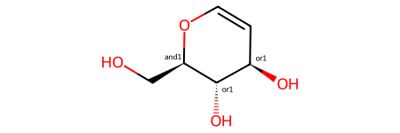
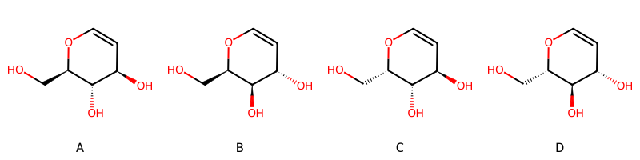
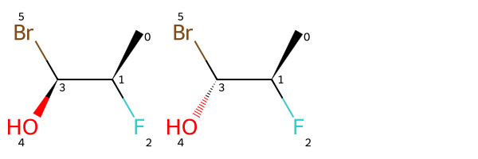
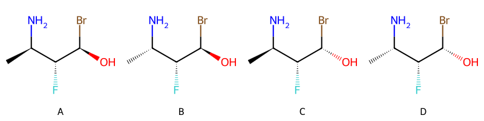
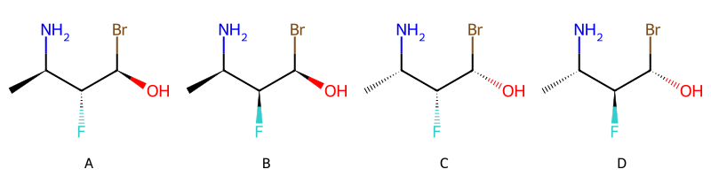

from rdkit import Chem
from rdkit.Chem import Draw
from rdkit.Chem.Draw import IPythonConsole
from rdkit.Chem import EnumerateStereoisomers
import rdkit
print(rdkit.__version__)2025.03.1April 18, 2025
A while ago I did a blog post with an introduction to stereo groups and enhanced stereochemistry. The basic idea of enhanced stereo isn’t particularly complicated, but interpreting what a given enhanced stereo specification with more than one stereo group actually means can be decidedly non-trivial. I’ve had a few conversations about this recently, so it seemed like a good idea to write some code.
In this post I provide some tools that are intended to help interpret enhanced stereo specifications. The idea is to expand the specification in a molecule and provides information about what it actually means.
For example, for this molecule from the previous blog post:

you get this set of possible stereoisomers:

and this summary of what’s present: ['AND', ['OR', 'A', 'B'], ['OR', 'C', 'D']]. So the enhanced stereo spec is saying that you have stereoisomer A or B together with stereoisomer C or D.
I think this code is useful enough to people working with enhanced stereo that it should probably end up in the RDKit, but I wanted to first get it out there and collect some feedback on whether or not people agree that I’m doing everything correctly and that the format of the results looks reasonable.
from rdkit import Chem
from rdkit.Chem import Draw
from rdkit.Chem.Draw import IPythonConsole
from rdkit.Chem import EnumerateStereoisomers
import rdkit
print(rdkit.__version__)2025.03.1Start with a molecule with a single stereo group containing a single atom:
IPythonConsole.drawOptions.addAtomIndices = True
m = Chem.MolFromSmiles('C[C@@H](F)[C@H](O)Br |o1:3|')
mIn this case it works fine to just run EnumerateStereoisomers() and then look at the type - AND or OR - of the stereogropu:
opts = EnumerateStereoisomers.StereoEnumerationOptions()
ms = EnumerateStereoisomers.EnumerateStereoisomers(m,options=opts)
Draw.MolsToGridImage(list(ms))
(rdkit.Chem.rdchem.StereoGroupType.STEREO_OR, [3])EnumerateStereoisomers() will enumerate all stereoisomers of a molecule, but we need more fine-grained control than that for this work, so here’s an function to enumerate all stereoisomers covered by a single stereogroup.
def _invertAtomStereochemistry(atom):
chi = atom.GetChiralTag()
if chi==Chem.ChiralType.CHI_TETRAHEDRAL_CCW:
nchi = Chem.ChiralType.CHI_TETRAHEDRAL_CW
elif chi==Chem.ChiralType.CHI_TETRAHEDRAL_CW:
nchi = Chem.ChiralType.CHI_TETRAHEDRAL_CCW
else:
raise ValueError('unhandled chirality')
atom.SetChiralTag(nchi)
# not useful until 2025.03.2 release
# def _invertBondStereochemistry(bond):
# chi = bond.GetStereo()
# if chi==Chem.BondStereo.STEREOATROPCW:
# nchi = Chem.BondStereo.STEREOATROPCCW
# elif chi==Chem.BondStereo.STEREOATROPCCW:
# nchi = Chem.BondStereo.STEREOATROPCW
# else:
# raise ValueError('unhandled chirality')
# bond.SetStereo(nchi)
def enumStereogroup(m,sg):
assert sg.GetGroupType() in (Chem.StereoGroupType.STEREO_OR, Chem.StereoGroupType.STEREO_AND)
assert len(sg.GetAtoms()) # or len(sg.GetBonds())
res = [sg.GetGroupType(),Chem.RWMol(m),Chem.RWMol(m)]
for at in sg.GetAtoms():
_invertAtomStereochemistry(res[2].GetAtomWithIdx(at.GetIdx()))
# this will not work until v2025.03.2 is out
#for bnd in sg.GetBonds():
# _invertBondStereochemistry(res[2].GetBondWithIdx(at.GetIdx()))
# remove the stereogroup from the result mols
for nmol in (res[1],res[2]):
nsgs = []
for nsg in nmol.GetStereoGroups():
if nsg.GetReadId() != sg.GetReadId() or sg.GetGroupType() != nsg.GetGroupType():
nsgs.append(nsg)
nmol.SetStereoGroups(nsgs)
return resApply that to the single stereo group from our sample molecule:
If there are multiple stereo groups in a molecule, we need to decide in which order they are going to be enumerated. I haven’t found anything in the CTAB documentation about what should be done, so I’m going to adopt the convention that lower numbered stereo groups have higher precedence and that OR is higher precedence than AND. The first part of this just seems logical, and the second is consistent with how Python and C++ do things: A and B or C is interpreted as A and (B or C).
Start by establishing that STEREO_OR will sort lower than STEREO_AND:
Ok, that works, so here’s the function for sorting stereo groups:
See that we get the expected order of OR and AND:
[(1,
rdkit.Chem.rdchem.StereoGroupType.STEREO_OR,
<rdkit.Chem.rdchem.StereoGroup at 0x71314cd01a10>),
(1,
rdkit.Chem.rdchem.StereoGroupType.STEREO_AND,
<rdkit.Chem.rdchem.StereoGroup at 0x71314cd01310>)]And now we can write the function to actually enumerate all stereoisomers described by a set of stereo groups.
The result is returned as a tree represented by set of nested lists:
def _compositionHelper(res,sgs):
assert len(res) == 3
if not sgs:
return res
nres = [res[0]]
sg = sgs.pop(0)[2]
for m in res[1:3]:
nres.append(_compositionHelper(enumStereogroup(m,sg),sgs[:]))
return nres
def getPossibleCompositions(m):
# get all the AND and OR stereo groups
sgs = [sg for sg in orderStereogroups(m) if sg[1] in (Chem.StereoGroupType.STEREO_OR, Chem.StereoGroupType.STEREO_AND)]
if not sgs:
raise ValueError("no enumerable stereo groups")
res = enumStereogroup(m,sgs[0][2])
sgs.pop(0)
return _compositionHelper(res,sgs)[rdkit.Chem.rdchem.StereoGroupType.STEREO_OR,
[rdkit.Chem.rdchem.StereoGroupType.STEREO_AND,
<rdkit.Chem.rdchem.RWMol at 0x71314cd1ecf0>,
<rdkit.Chem.rdchem.RWMol at 0x71314cd4ea20>],
[rdkit.Chem.rdchem.StereoGroupType.STEREO_AND,
<rdkit.Chem.rdchem.RWMol at 0x71314cd4ed90>,
<rdkit.Chem.rdchem.RWMol at 0x71314cd4ec50>]]Finally, it would be nice useful to get a report of what could actually be in the sample.
For this we will keep track of all the unique stereoisomers present and assign each of them a letter:
def _treeHelper(c1,smisSeen):
if isinstance(c1,list):
c1 = list(annotateTree(c1,smisSeen))
else:
smi = Chem.MolToSmiles(c1)
if smi in smisSeen:
idx = smisSeen.index(smi)
else:
idx = len(smisSeen)
smisSeen.append(smi)
c1 = (chr(ord('A')+idx),smi,c1)
return c1
def annotateTree(composition,smisSeen=None):
if smisSeen is None:
smisSeen = []
op,c1,c2 = composition
c1 = _treeHelper(c1,smisSeen)
c2 = _treeHelper(c2,smisSeen)
return (op,c1,c2)(rdkit.Chem.rdchem.StereoGroupType.STEREO_OR,
[rdkit.Chem.rdchem.StereoGroupType.STEREO_AND,
('A',
'C[C@@H](N)[C@@H](F)[C@H](O)Br',
<rdkit.Chem.rdchem.RWMol at 0x71314cd4ef20>),
('B',
'C[C@H](N)[C@@H](F)[C@H](O)Br',
<rdkit.Chem.rdchem.RWMol at 0x71314cd4fb00>)],
[rdkit.Chem.rdchem.StereoGroupType.STEREO_AND,
('C',
'C[C@@H](N)[C@@H](F)[C@@H](O)Br',
<rdkit.Chem.rdchem.RWMol at 0x71314cd4fbf0>),
('D',
'C[C@H](N)[C@@H](F)[C@@H](O)Br',
<rdkit.Chem.rdchem.RWMol at 0x71314cd4fa60>)])And here’s a function to generate a text description of what could be present, along with a rendering of the individual stereoisomers involved:
def _textSummary(composition):
op,c1,c2 = composition
if op==Chem.StereoGroupType.STEREO_AND:
op = 'AND'
elif op==Chem.StereoGroupType.STEREO_OR:
op = 'OR'
else:
raise ValueError(op)
children = []
for c in (c1,c2):
if isinstance(c,list):
nc1 = _textSummary(c)
else:
nc1 = c[0]
children.append(nc1)
nc1,nc2 = children
res = [op, nc1, nc2]
# condense when possible
for o in ('AND','OR'):
if op==o and \
isinstance(nc1,list) and nc1[0]==o and \
isinstance(nc2,list) and nc2[0]==o:
children = nc1[1:]
for c in nc2[1:]:
if c not in children:
children.append(c)
res = [o] + children
break
return res
def report(composition):
smiKey = []
aTree = annotateTree(composition,smiKey)
mols = [Chem.MolFromSmiles(x) for x in smiKey]
lbls = [chr(ord('A')+i) for i in range(len(mols))]
img = Draw.MolsToGridImage(mols,legends=lbls,molsPerRow=4)
rpt = _textSummary(aTree)
return rpt,imgIPythonConsole.drawOptions.addAtomIndices = False
rpt,img = report(getPossibleCompositions(m2))
print(rpt)
img['OR', ['AND', 'A', 'B'], ['AND', 'C', 'D']]
So, in words, molecule m2 contains either a mixture of A and B or a mixture of C and D.
I’m sure someone better at front-end work than I am could come up with a much nicer way of presenting this, but I think it’s already useful as is.
Let’s look at some more examples:
As discussed in the earlier blog post, one of the common uses of enhanced stereo is to express the relative stereochemistry of two centers.
Here’s another molecule with one stereo group including two atoms (the relative stereo of those atoms is defined) and one with a single atom:
Generate a report for that:
['OR', ['AND', 'A', 'B'], ['AND', 'C', 'D']]
The reporting function above will condense nested AND or OR groups. For example, [AND [AND A B] [AND C D]] is reported as [AND A B C D]. Here’s an example of that:
At some point it may be worth adding another function which can, in the case of OR groups, provide a list of possible compositions.
This would map something like:
['OR', ['AND', 'A', 'B'], ['AND', 'C', 'D']]
to
'A' AND 'B'
OR
'C' AND 'D'And it would also ideally be able to recognize that: ['AND', ['OR', 'A', 'B'], ['OR', 'C', 'D']] is:
'A' AND 'C'
OR
'A' AND 'D'
OR
'B' AND 'C'
OR
'B' AND 'D'Finally, here’s the “more complicated” example from the original blog post: